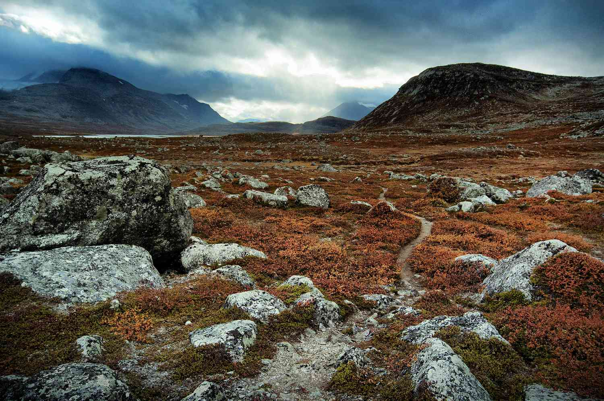

Giới thiệu chung
Đài nguyên là hệ sinh thái lạnh giá, nằm ở vùng cực và vùng núi cao, nơi có nhiệt độ thấp và thảm thực vật chủ yếu là địa y, rêu và cây bụi thấp.
Phân bố địa lý
Đài nguyên phân bố chủ yếu ở Bắc Cực (Alaska, Canada, Nga) và một số vùng núi cao như dãy Himalaya và Andes.
Đặc điểm khí hậu
Khí hậu lạnh giá quanh năm, với mùa đông kéo dài và nhiệt độ có thể xuống dưới -50°C. Mùa hè ngắn và nhiệt độ chỉ tăng nhẹ.
Đa dạng sinh học
Đài nguyên là nơi sinh sống của các loài động vật như tuần lộc, gấu Bắc Cực, cáo Bắc Cực và nhiều loài chim di cư. Thực vật chủ yếu là địa y, rêu và cây bụi thấp.
Thảm thực vật
Thảm thực vật đài nguyên chủ yếu bao gồm địa y, rêu, cỏ và cây bụi thấp. Cây cối không thể phát triển cao do lớp băng vĩnh cửu và khí hậu khắc nghiệt.
Vai trò sinh thái
Đài nguyên đóng vai trò quan trọng trong việc điều hòa khí hậu toàn cầu, lưu trữ carbon và là nơi sinh sống của nhiều loài động thực vật đặc hữu.
Tác động của con người

Con người khai thác dầu khí, xây dựng cơ sở hạ tầng và săn bắn quá mức, dẫn đến suy thoái môi trường và mất đa dạng sinh học.
Bảo tồn
Các nỗ lực bảo tồn bao gồm thành lập các khu bảo tồn, quản lý bền vững tài nguyên và nghiên cứu tác động của biến đổi khí hậu.
Kết luận
Đài nguyên là một hệ sinh thái độc đáo và quan trọng, mang lại nhiều lợi ích cho con người và môi trường. Cần có biện pháp bảo vệ và phát triển bền vững để duy trì sự cân bằng sinh thái.